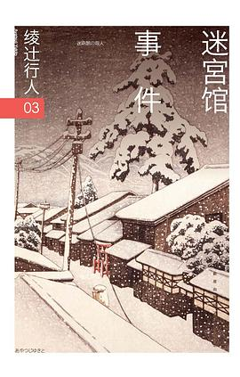

迷宫馆事件

总体观点
《迷宫馆事件》（迷路館の殺人）是绫辻行人于1988年发表的‘馆系列’经典之作，奠定了其在新本格推理界叙事性诡计与嵌套结构探索的大师地位。作品以古希腊克里特岛米诺陶洛斯迷宫神话为空间隐喻，构筑了一座深埋地下、没有阳光、只有环形走廊与相同房间的封闭地牢式豪宅。
小说的精髓在于其近乎完美的‘作中作’（书中书）叙事架构。四位青年推理作家受邀来到迷宫馆，为了继承老作家宫垣叶太郎的巨额版税遗产，限时创作以迷宫馆为舞台的杀人小说；然而，参赛作家们却接二连三以自己手稿中设计的死法被残酷斩首处决。绫辻行人在虚构与现实的边界上展开了精密的手术刀式推演，通过终章鹿谷门实（岛田洁）对小说文本与现实原型的反转解构，给出了华丽至极的解答，展现了新本格推理独有的智力解谜美感。
核心观点
-
1. 同心圆迷宫的空间几何学与封闭绝望感
地下迷宫完全剥离了自然采光与外部地标，所有回廊与房门完全对称相同，带来强烈的幽闭恐惧与方向迷失。
走廊两侧排列着以古希腊神祇命名的密闭客房，住客若没有平面指示图便会在漆黑的地下环形长廊中无限打转。 -
2. 书中书的双重镜像与拟态连环杀人
虚构的手稿与现实中的命案形成互文，凶手利用作家对手稿字句的执念，完成残酷的死亡预言仪式。
作家须野在稿纸上写下‘无头尸体被置于牛头人身雕像之下’，数小时后他本人便在同一个位置被割去头颅毙命。 -
3. 遗产争夺背后的文学嫉妒与创作心魔
名利诱惑下的文坛同侪竞争激化为赤裸裸的恶意，创作才华的贫瘠成为滋生杀戮冲动的心理温床。
参赛作家为了胜出不仅在手稿中相互贬损攻击，更在暗中窥探彼此的思路，把对老作家的依附演变为嗜血博弈。 -
4. 断头斩首诡计与身份置换的经典盲区
斩去被害者头颅绝非单纯为了制造血腥恐惧，而是为了隐匿死亡顺序与真假尸体的身份置换。
凶手将被害者头颅割下丢入深井，利用腐败与衣着混淆验尸官对第一死者与自杀者的关键时间差判断。 -
5. 叙述性诡计终局反转：读者亦在迷宫之中
真正狡黠的迷宫不是地底建筑，而是作者在序言与跋语中精心布设的文本语言陷阱。
尾声揭示整本书的叙述者与署名者并非同一人，书稿真正的作者与真凶身份在一瞬间发生惊天大逆转。
全书结构
-
序幕：地底迷宫与老作家的古怪遗嘱
介绍中村青司设计的地下迷宫馆构造，老作家宫垣在六十大寿宴会上吞枪自尽，留下限时小说创作遗嘱。
宫垣在暗门后饮弹自尽，律师当众宣读录音带遗嘱：四位弟子各写一篇以迷宫馆为背景的杀人小说，胜者继承所有财产。 -
第一夜：狂热执笔与牛头雕像前的断头尸
四位作家被锁在各自房间内连夜赶稿，清晨第一具断头尸在中央大厅的弥诺陶洛斯石像下被赫然发现。
作家须野一平的无头尸身倒在血泊中，双手僵硬地抓着自己写满密密麻麻情节的未干手稿第一章。 -
第二夜：密室毒杀与手稿预言的精准兑现
众人陷入人人自危的猜忌恐慌，第二位作家在反锁的内侧密室中饮毒咖啡暴毙，死法与刚写完的章节一模一样。
女作家舟野的房门用链条锁紧，窗户全被铁栅焊死，警方（名侦探）破门后只见到打翻的杯子与桌上的作中作。 -
第三夜：地下暗道、第三起屠杀与真凶现形
迷宫馆暗门机制被意外触发，侦探岛田洁深入地下回廊勘查，第三名受害者惨遭溺毙，真凶动机逐渐浮出水面。
岛田洁借助打火机的微弱火光在回廊转角发现沾血脚印，揭开凶手利用迷宫对称盲区自由移动的机关密道。 -
终幕：文本背后的双重解密与署名真相
岛田洁指认凶手并破解密室手法，全书以小说出版者的‘跋’完成对整部作品真实作者与幕后真凶的终极揭秘。
全书最后三页揭露手稿出版的真正操盘者，读者猛然发现自己从头到尾都被‘叙述者’巧妙引导跌入精心设计的文字盲盒。